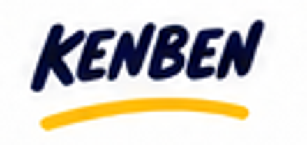
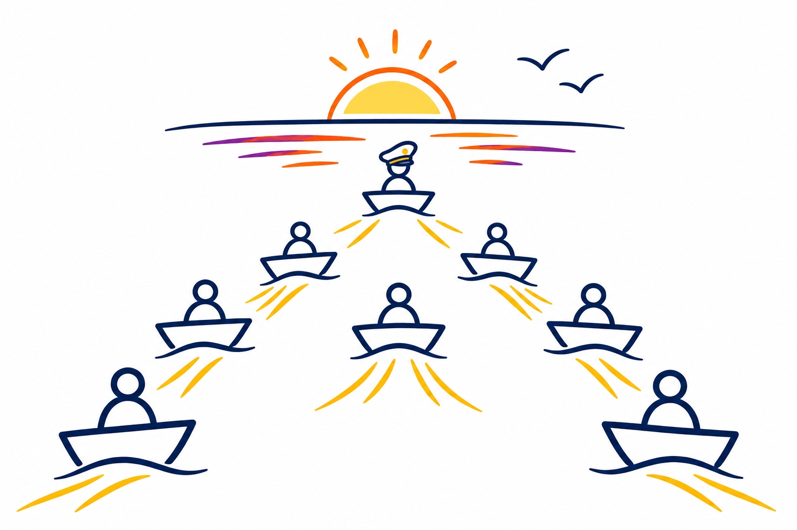

Strategy
Richting, prioriteiten en helderheid over succes.

Groei als manager. Krijg meer grip. Bereik meer met minder moeite.
In drie maanden versterk je je zelfvertrouwen, managementvaardigheden en handelingsvermogen. Met een ervaren psycholoog en sparringpartner naast je werk je aan de uitdagingen die er nú spelen.

Als manager stuur je niet alleen jezelf. Je draagt ook verantwoordelijkheid voor de ontwikkeling, samenwerking en resultaten van je team.
Geen opleiding op afstand van de dagelijkse werkelijkheid. Je brengt je echte vragen, dilemma’s en ambities mee. We kijken samen wat er speelt, waar je invloed hebt en wat je morgen anders kunt doen.
Met het Kapiteinsmodel, de SkillScan, CliftonStrengths en gerichte coaching bouw je aan zelfinzicht, vaardigheden en handelingsvermogen.
Ken jezelf. Ben jezelf. Stuur jezelf.Met acht samenhangende invalshoeken ontdek je wat goed loopt, waar het schuurt en waar je als manager gericht kunt sturen.
Richting, prioriteiten en helderheid over succes.
De juiste mensen en een sterke mix van kwaliteiten.
Samenwerking die elkaar sterker maakt.
Steun, rugdekking en hulp waar nodig.
Ruimte, eigenaarschap en duidelijke kaders.
Slimme processen, routines en hulpmiddelen.
Vaardigheden en ervaring om goed te presteren.
Energie, betrokkenheid en trots in het team.
Een overzichtelijke route met persoonlijke coaching, inzicht in je team en directe toepassing. De exacte invulling stemmen we af op jouw rol en uitdagingen.
Wat speelt er? Wat wil je ontwikkelen? Waar willen we naartoe?
Talenten, patronen, voorkeuren en ontwikkelkansen verkennen.
Een scherp beeld van de dynamiek en de opgave van je team.
Samen met je team inzicht en concrete verbeterkansen ontwikkelen.
Keuzes maken, vaardigheden oefenen en gericht interveniëren.
Opbrengsten verankeren en je eigen koers verder vormgeven.
De route wordt afgestemd op de praktijk en ontwikkeldoelen van de manager.
Als manager hoef je niet alles zelf op te lossen. Je wilt vooral begrijpen wat het functioneren van je team beïnvloedt — en waar jij het verschil kunt maken.
De 8S-teamdiagnose brengt acht samenhangende dimensies in beeld. Het gesprek dat daaruit ontstaat, helpt je team en geeft jou als manager meer grip op de juiste interventies.
Illustratief overzicht van acht samenhangende teamdimensies.
Een intensief maar behapbaar traject, geïntegreerd in je werk.
Persoonlijke begeleiding gecombineerd met inzicht in je eigen team.
Je werkt aan actuele managementvraagstukken en merkt het verschil in de praktijk.
Ontdek wat dit traject voor jou of een manager in jouw organisatie kan betekenen.
Een eerste gesprek om de vraag en mogelijkheden te verkennen.